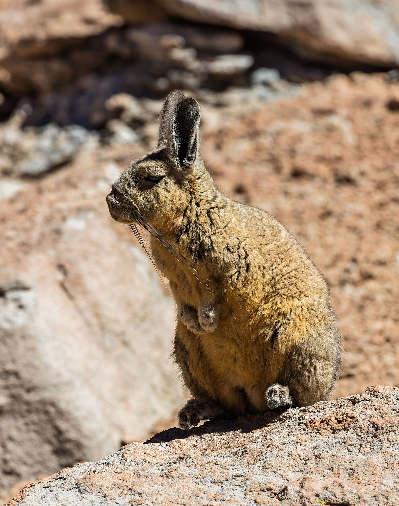

vizcacha
vizcacha
Distribucion
Lagostomus maximus, llamada comúnmente vizcacha común, vizcacha de las llanuras, vizcacha de las pampas o vizcacha mora, es una especie de roedor de la familia Chinchillidae, la única viva del género Lagostomus. Es un roedor de hasta 60 cm de largo que habita en Sudamérica, desde el sur de Bolivia y Paraguay hasta el norte de la Patagonia argentina.
Biología
Es de pelo abundante, cabeza grande, hocico abultado y chato por delante, bigotes largos y sedosos y orejas pequeñas. Generalmente, de pelaje gris en el lomo y blanco en el vientre. Dos franjas negras le atraviesan la cara. Sus patas son cortas, con dedos y uñas fuertes que le sirven para cavar la madriguera. La cola se desprende con facilidad, y esto la salva muchas veces de ser capturada.
Enlaces a otras páginas
 Inicio
Inicio Condor
Condor Puma
Puma Vicuna
Vicuna